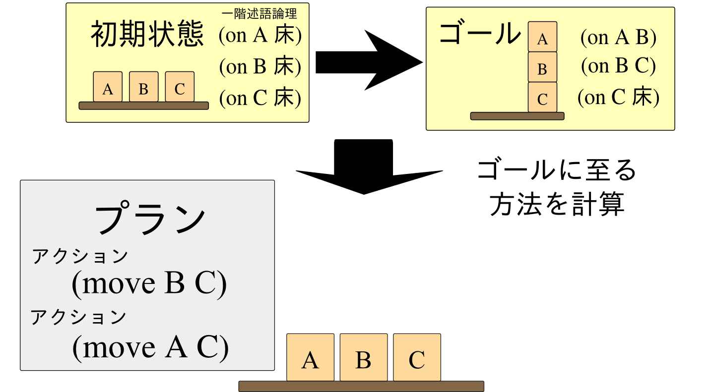
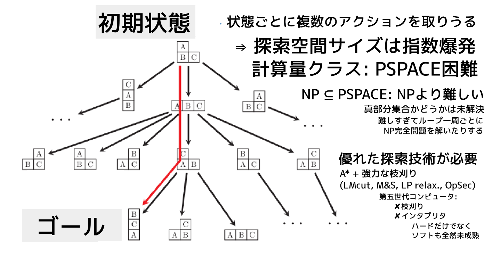
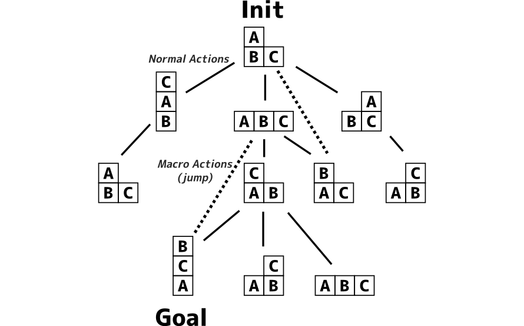
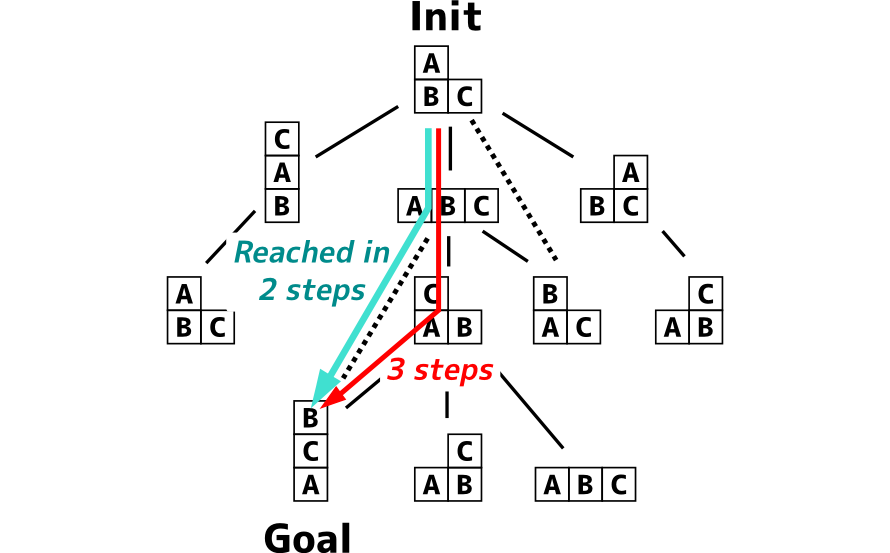
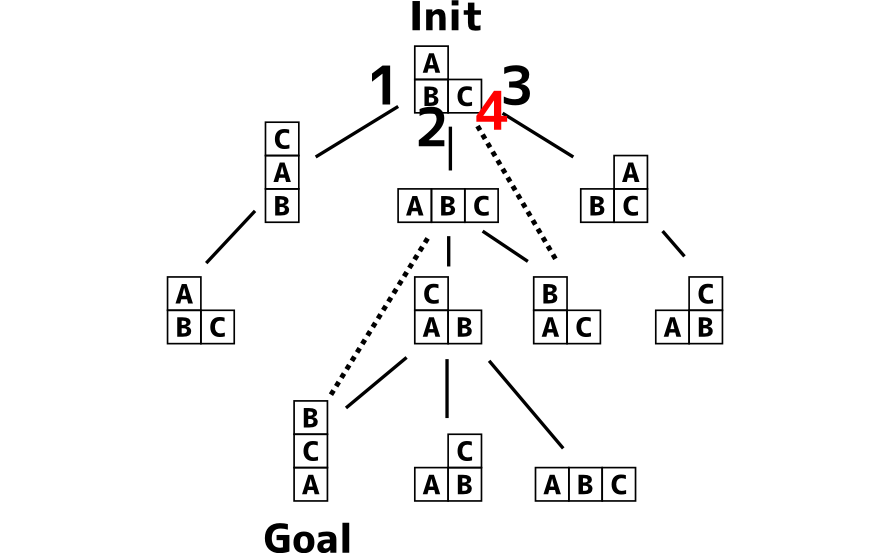
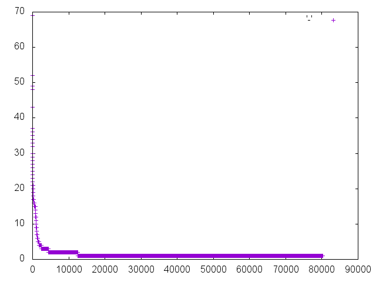

{プランニング, Lisp} × {マクロ, ユーティリティ, Utility Problem}
浅井 政太郎 (guicho2.71828)
東京大学 総合文化研究科 博士一年
分野: 人工知能 推論・探索
高速プランニングソルバの開発
教授もLisper (CL-MPIの作者) → http://metahack.org


My name is Masataro Asai, in this presentation, as other people do, Id like to give a brief introduction to my research field and what I do.
1 章立て
Total 20分
- Lisp × {マクロ, ユーティリティ, Utility Problem}
- マクロとはどういう概念か?
- Common Lisp のマクロ
- Common Lisp のユーティリティ
- Common Lisp の Utility Problem
- Common Lisp での Utility Problem との闘いの歴史
- プランニング × {マクロ, ユーティリティ, Utility Problem}
- 自動プランニングへのイントロダクション
- 自動プランニングの技術
- プランニングでのマクロ
- プランニングでの Utility Problem
- マクロの学習
- プランニングでの マクロの学習
- Lisp マクロの学習?
- Future Direction — Utility Problem をどう解くのか?
2 Lisp × {マクロ, ユーティリティ, Utility Problem}
マクロとはどういう概念か?
Common Lisp のマクロ
Common Lisp のユーティリティ
Common Lisp の Utility Problem
2.1 マクロとは広義にはどういう概念か?
マクロという「名称」はLispだけ? → NO.
→ 何らかの一般性を有する概念
| Lisp | マクロ |
| C | マクロ |
| エクセル | マクロ |
| 秀丸 | マクロ |
| Emacs | キーボードマクロ |
マクロ =
複数の命令列に展開されるもの
with-open-file 作業X
→ open + unwind-protect + 作業X + close
2.2 様々なマクロ (おさらい)
| キーボードマクロ | C | Lisp |
|---|---|---|
| (emacs, 秀丸 etc.) | マクロ | マクロ |
| キーボード入力の列に展開 | 文字列に展開 | 木構造に展開 |
| 入力をパースできない | 入力をパース出来ない | 入力をパース出来る |
| 文字列ベース | 文字列ベース | シンボルベース |
| よく使うパターンの | よく使うパターンの | よく使うパターンの |
| ショートカット | ショートカット | ショートカット |
| 言語となり思考を規定する |
2.3 Common Lisp の関数とマクロ
with-gensyms – マクロ
once-only – マクロ
ensure-list – 関数
symbolicate – 関数
プログラマに与える恩恵は同じ
(抽象化の手段)
適用対象・状況・呼び方が異なるだけ
→ どちらも広義のマクロ
2.4 Common Lisp における? ユーティリティ ＃とは
— is a small, context-free, useful bit of code that is self-contained, and doesn't warrant an entire new library.
Robert Smith, Quickutil: A New Software Distribution Paradigm
- Small
- 1つか2つの独立した機能を持つ関数である。
- Self-contained
- 外部ライブラリに依存しない。
- Context-free
- 使い道が限定されない。
- Useful
- 主観的だが、とにかく「便利」
2.5 Common Lisp における Utility Problem ＃とは
Utility Library Problem.
Common Lispプログラマなら以下のようなことを 思ったことがあるのではないですかね。 Alexandriaは大きすぎる… なんでAlexandriaにあの関数ないんだよ… aandのためだけにarnesi… split-sequence… そんな微妙な行き違いの結果、みんな オレオレユーティリティ集を作るみたいなことが発生する。深町英太郎: Lispユーティリティの新しい解決案「Quickutil」
一つのユーティリティ関数のために巨大なシステムをロードするのは嫌!
複数のユーティリティ関数が複数のシステムにバラけている!
2.6 Common Lisp での Utility Problem との闘いの歴史
- 1970s — そもそも処理系自体が乱立状態
- 1984 — CLtL1
- 1990 — CLtL2
- 1994 — ANSI Common Lisp が成立、普及
- 1991 — Portable utilities for Common Lisp user guide & implementation notes
- だれそれが作ったオレオレ・ユーティリティが乱立
- 2002 — cl-utilities (google で期間指定して調べるとわかる)
- 2006 — Alexandria (他の関数をいろいろまとめた)
- 2013 — QuickUtil
既存の有名なユーティリティ関数を集めたライブラリ
新規性 : 個別のユーティリティを一つ一つロードできる
☺ 誰でもすぐに追加できる
様々な議論 @ reddit … e.g. "over-engineered"
アイディアは良いのに、いまだ killer app にはなっていない → なぜ?
3
自分の研究から
使える知見は
ないだろうか??
4 AI Topics – プランニングへのイントロダクション
4.1 誰?


And let me introduce these robots. The guy in the left is Astro boy.
4.1.1 誰?

As you know, he is a famous manga superhero invented by Tezuka Osamu in 50s,
4.1.2 誰?

and he can think, hear, speak, act. he also has emotions.
4.1.3 誰?

In contrast, the guy in the right is a real robot that is actually in use @ fukuoka prefecture for the rescue purpose.. His name is T-52 Enryu, developped by a Japanese company Temzak. He is huge and powerful – about 4 meters in height and can carry things which is as heavy as 500kg. Well, so, in a sense, he is also a superhero in the real disastrous situation.
4.1.4 誰?

But does he have feelings or can he think? Can he even move around by his own?
4.1.5 誰?

No. It requires full human intervention — it is indeed operated by a driver who gets in or by a remote control. It is more like a super-sophisticated shovel car.
4.2 実際の大規模災害では非実用的 — 操縦士が足りない!


- そのままでは役に立たない!
Now the problem is : It's ok in small accidents but is impractical in the real, massive natural disaster which frequently occurs in Japan. The key resource is human — These special purpose vehicles require human intervention, thus they are useless without trained operators.
4.2.1 操縦士を増やせない – Human Resource and Training
- ✘ 時間 がかかる
- 訓練に ＞100時間, 必要な時だけ増やす のは不可能
- ✘ ￥￥￥￥ がかかる
- 訓練官、訓練場所、訓練用具
- ✘ 技術は 維持が重要
- 定期的な再訓練、長期的コスト、さらなるマニー
- ✘ 平時は 無駄 な技術
- 普段は意味がない – 無駄なマニー!
In a natural disaster, we need as many experienced operators as possible. However, it is virtually impossible due to several reasons.
First, training takes time. It is impossible to quickly increase the number of operators as needed, at the time of disaster.
Second, the money matters. Training a person costs a lot of money, including: the cost of maintaining a training center, the cost of additional vehicles for training, the cost of training the trainers, wages for trainers, etc.
Third, Skills need to be updated and maintained. You know, how about preparing the large number of operators in advance? No, the society cannot torelate the cost of keep training them. Operators may lose the skills and skills may become outdated.
Finally, in a normal situation, those skills are useless. It forces the society to waste a great amount of extra money.
4.3 だからこそ: 自動プランナ Automated Planner

研究テーマのプランニングは、ロボットに、人間の助けを借りず、いかに自律して行動させるかを扱います。 これをモデル化したプランニング問題は、具体的な行動の列を求める 組合せ最適化問題です。
プランニング問題のタスクは、 センサーから初期状態とゴールを受け取って、被災者を助ける正しい手順を出力することです。
たとえば、この図では男性が瓦礫に埋まって助けを求めています。 プランニング機能のあるロボットは、コレに対して「男性を助けよ」という大まかな指示を受けます。
4.4 だからこそ: 自動プランナ Automated Planner

指示の内容には、図のように初期状態とゴール、許可された行動のリストが入っています。 ロボットは、自動プランニングにより、人間の代わりに適切な行動を組み立てて、ゴールを自動で達成します。
4.5 だからこそ: 自動プランナ Automated Planner

プランニングは汎用な枠組みなので、災害救助以外にも様々な問題に適用することができます。 現実の応用例では「宇宙探査機運行問題」や「企業ネットワーク脆弱性問題」も表現できます。
このように、プランニングは、難しい問題を汎用性を失わずに解くことを目指します。
4.6 Q. はやりのDeep Learningとの違いは?
A. 抽象化レイヤが違う
機械学習・Neural Networks
for 認識・反射
- 入力 は Subsymbolic
画像、音声、非構造化テキスト
- 1タイムステップ:
直後 の行動の決定
Reflex Agent = 脊髄反射
パブロフの犬 : 餌→よだれ
自動運転 : 赤信号,人 → 止まる.
ファナック産業ロボ : 画像 → モータ出力
翻訳 : 文章 → 文章
☺ 効率よく 1-to-1 mapping
☹ 単純作業
推論・探索
for プランニング・ゲーム・定理証明
- 入出力は Symbolic
論理 オブジェクト ルール
- >1000タイムステップ:
未来に渡る 戦略の決定
(戦略 = 行動の 列や木)
レスキューロボ : 現実 = 難解パズル
囲碁,将棋 : ゴール = 勝利
証明器 : ゴール = QED
コンパイラ : 命令列の生成
☺ 多数の論理の組み合わせ
AlphaGo = Subsymbolic (DLNNによる評価関数の学習) + Symbolic (UCT-MCTSによる探索)
DLNN: Deep Learning Neural Network
UCT-MCTS: Monte Carlo Tree Search + Universal Confidence Bound applied on Trees
5 プランニング問題 (決定的,完全情報) – Blocksworld

5.1 アクション = 条件付き状態遷移
(move ?X ?Y)
前提条件
積み木 ?X の上に何もなく (1)
積み木 ?Y の上にも何もない (2)
追加効果
⇒ ?X が ?Y の上に移動する。(3)
削除効果
⇒ ?Y は clear ではなくなる。(4)
(:action move :parameters (?X ?Y) :preconditions (and (clear ?X) ; (1) (clear ?Y)) ; (2) :effect (and (on ?X ?Y) ; (3) (not ; (4) (clear ?Y))))
変数 ?X, ?Y などに値 A, B などを適用して使う
PDDL : Planning Domain Description Language – S式ベースの記述言語
5.2 プランニング = グラフ探索
ノード : 状態 = 命題の集合 ⇒ (on A B), (clear A) など
辺 : アクション ⇒ (move A B) 等

*1 [Helmert, 2006] [Richter, 2010]
6 プランニング × {マクロ, ユーティリティ, Utility Problem}
プランニングでのマクロ
プランニングでの Utility Problem
6.1 プランニングでの マクロ: マクロ・オペレータ
アクションの列を1つのアクションとして融合
(move a b) (move b c)
→ (move-move a b c)
| ABSTRIPS | (Sacerdoti, '71) |
| MORRIS | (Minton, '85) |
| PRODIGY | (Minton, '89) |
| … | |
| Macro-FF | (Botea et al. '05) |
| Wizard | (Newton et al. '07) |
| Marvin | (Coles and Smith '07) |
| MUM | (Chrpa et. al. '14) |
6.2 アクション = 条件付き状態遷移
(move ?X ?Y)
前提条件
積み木 ?X の上に何もなく (1)
積み木 ?Y の上にも何もない (2)
追加効果
⇒ ?X が ?Y の上に移動する。(3)
削除効果
⇒ ?Y は clear ではなくなる。(4)
(:action move :parameters (?X ?Y) :preconditions (and (clear ?X) ; (1) (clear ?Y)) ; (2) :effect (and (on ?X ?Y) ; (3) (not ; (4) (clear ?Y))))
6.3 マクロの作成
| actions | a1 | a2 | m=a1 + a2 | |
|---|---|---|---|---|
| parameters | params1 | params2 | ||
| X,Y | Y,Z | |||
| 前提条件 | pre1 | pre2 | ||
| clear,clear | clear,clear | |||
| 追加効果 | e^+1 | e^+2 | ||
| on | on | |||
| 削除効果 | e^-1 | e^-2 | ||
| clear | clear |
6.3.1 マクロの作成
| actions | a1 | a2 | m=a1 + a2 | |
|---|---|---|---|---|
| parameters | params1 | params2 | params1 ∪ params2 | |
| X,Y | Y,Z | X,Y,Z | ||
| 前提条件 | pre1 | pre2 | ||
| clear,clear | clear,clear | |||
| 追加効果 | e^+1 | e^+2 | ||
| on | on | |||
| 削除効果 | e^-1 | e^-2 | ||
| clear,clear | clear,clear |
.
For example, the new parameters are approximately a union of the parameters of the base actions.
6.3.2 マクロの作成
| actions | a1 | a2 | m=a1 + a2 | |
|---|---|---|---|---|
| parameters | params1 | params2 | params1 ∪ params2 | |
| X,Y | Y,Z | X,Y,Z | ||
| 前提条件 | pre1 | pre2 | pre1 ∪ (pre2 ∖ e^+1) | |
| clear,clear | clear,clear | |||
| 追加効果 | e^+1 | e^+2 | (e^+1 ∖ e^-2) ∪ e^+2 | |
| on | on | |||
| 削除効果 | e^-1 | e^-2 | (e^-1 ∖ e^+2) ∪ e^-2 | |
| clear,clear | clear,clear |
打ち消し合う効果は消える
the preconditions and effects are added or subtracted in order to cancell and hide the intermediate effects.
6.4 ☺ 探索木が浅くなり高速化

The benefit of using macros is a speedup. this figure shows the search space of a planning problem, where the macros are shown in dotted lines.
6.4.1 ☺ 探索木が浅くなり高速化

Thanks to the added macros, the goal can be found in 2 steps, compared to 3 steps in the red solution, in the original domain. If the macro is long, it achieves a larger jump and speedup.
6.5 ☹ 探索木の幅が増える

→ 無駄なマクロが沢山あると遅くなる
However, there is also several drawbacks. First, macros increase the branching factor. In this example, at the initial state, the number of edges have increased from 3 to 4, and it may increase the memory usage.
6.6 マクロオペレータの学習
EBL Explanation-Based Learning — 「使えるマクロ」を訓練問題から学習する
- 簡単な練習問題
- 手紙を出しなさい
- 練習プラン
- 文面を書く
送り先住所を書く
切手を手紙に貼る
手紙を持つ
ポストを探す
ポストまで歩く
手の中の物体を投函
- 学習したマクロ
- マクロ1(X,Y):
XをYに貼る
Yを持つ
マクロ2(X):
Xを探す
Xまで歩く
- 難しい問題
- 確定申告をしなさい
- 解答例
- 領収書を集める
…
マクロ1(切手,封筒)
マクロ2(ポスト)
…
6.7 プランニングにおける Utility Problem
- ゴミマクロが探索を遅くする
- 例: 手紙 を 封筒 に貼る + 封筒 を持つ — 引数が適切でない
- 過学習がおこる
- 一見良く見えたマクロ → 特定の状況でしか使えないものだった
- 使えるマクロがどれか事前に解らない
- 例: 封筒 は練習問題には含まれないシンボル
6.8 参考:様々なマクロフィルタリング手法がある
- Macro Length limit – 長さの制限 (よく使われる)
- MacroFF (Botea, Muller, Shaeffer 2005)
- Component Abstraction
- Occurrence points + Bonus
- Wizard (Neuton et. al. 2007)
- 遺伝的アルゴリズムでマクロを学習
- Marvin (Coles et. al. 2004;2007)
- 実行時に動的にマクロを学習
- MUM (Chrpa et. al. 2014)
- Outer Entanglement
- BLOMA (Chrpa, Siddiqui 2015)
- Block Deordering
7 Lisp とプランニングにおけるUtility Problem の比較
Lisp におけるユーティリティ
- ユーティリティは人が書いてくれる
- →機械的に自動で発見・学習するよりも簡単に見える。
- →一見関連が無いように見えるが…
- Alexandria が 全然更新されない理由は?
- ← 知らない第三者の書いたマクロが本当に使えるのか、 評価が難しい
- ← 新機能の追加に躊躇する (保守的)
- ← いつの時代も、人間の一番大きなコストは コミュニケーションコスト
- (人類 = プログラムを自動生成する分散並列探索アルゴリズム)
- Gmail,SNSのような自動フィルタリング・サジェスト機能が必要
- Quicklisp が流行った理由は?
- Zach が毎月 ある程度 の質を保ってくれているから！
- (ある程度 とは?)
8 手法
3346の QuickLisp システムを全てロードする
全パッケージのfbound シンボルを集める
名前でソートして再実装を見つける
時間的都合で出来なかったが、もう少したったらやりたいこと:
✘ swank-xref で何回参照されているかを調べる
✘ Lisp のマクロを学習できるか?
9 名前でソートして再実装を見つける
一回目, remove-duplicate が遅すぎて失敗 << シンボルが30万個ぐらいあった
二回目: hashtable実装で
(ql:quickload '(:iterate :eazy-gnuplot)) (use-package '(:iterate :eazy-gnuplot)) (defparameter *all-symbols* (let (acc) (do-all-symbols (s acc) (when (fboundp s) (push s acc))))) (defparameter *all-names* (make-hash-table :test #'equal)) (defparameter *histogram* (sort (hash-table-alist *all-names*) #'> :key #'cdr)) (with-plots (s) (gp-setup :output "img/histogram.png") (plot (lambda () (iter (for (name . count) in *histogram*) (print count)))))
9.1 結果
ロングテール!

9.2 内訳
なぜこんなに… (急ぎだったのであまり細かくは見れていない)
("NAME" . 69) ("ENSURE-LIST" . 52) ("WITH-GENSYMS" . 49) ("TEST/ALL" . 48) ("WHEN-LET" . 43) ("AIF" . 37) ("TEST" . 36) ("+" . 36) ("-" . 35) ("SIZE" . 34) ("TIME" . 34) ("*" . 33) ("RUN" . 32) ("CLOSE" . 32) ("MESSAGE" . 30) ("LOG" . 30) ("LENGTH" . 30)
("/" . 29) ("EXPT" . 29) ("=" . 29) ("WITH-UNIQUE-NAMES" . 29) ("OPEN" . 28) (">" . 28) ("<" . 28) ("UNION" . 28) ("ONCE-ONLY" . 28) ("AWHEN" . 28) ("COS" . 27) ; wtf?? ("SIN" . 27) ; wtf?? ("SQRT" . 27) ("TAN" . 27) ("<=" . 27) ("TEXT" . 27) ("STRING" . 27) ("MAX" . 27) ("INTERSECTION" . 27) (">=" . 27) ("FLATTEN" . 26) ("DEFCONSTANT" . 26) ("WRITE" . 26) ("CLASS-NAME" . 26) ("MAP" . 26) ("COMPOSE" . 25)
10 まとめ
Common Lisp のユーティリティ問題について話した。
プランニングでのユーティリティ問題について話した。
いつの時代も、人間の一番大きなコストは コミュニケーションコスト
Gmail,SNSのような自動フィルタリング・サジェスト機能が必要
-— 実験:
Quicklisp ライブラリ中のシンボルをソートして再実装を見つけた。
✘ swank-xref で何回参照されているかを調べられなかった。
✘ Lisp のマクロを学習できなかった。
-— Future work:
全ライブラリを読み込んで, どれだけの reputation を得ているかを調べる。
reputation によってユーティリティをランク付けし、quicklisp リリースごとに動的に更新する。
使われないユーティリティは消される! 流行りのユーティリティは入ってくる!